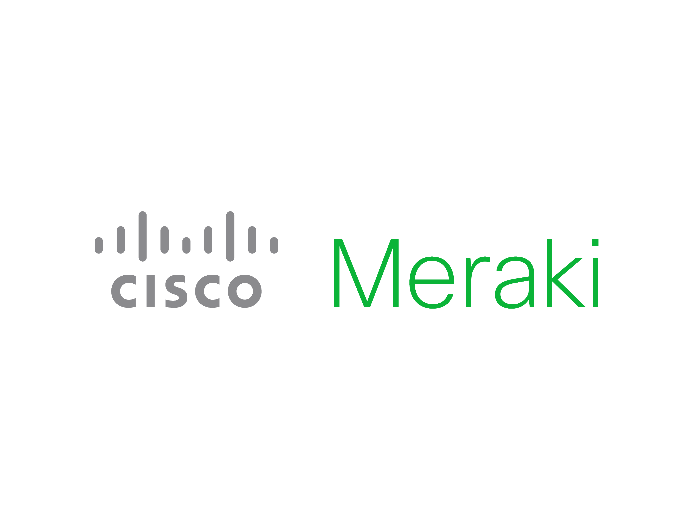

Hola, soy Natanael Vazquez. Egresado con honores de la carrera en ingeniería en electrónica y comunicaciones por parte de la Facultad de Ingeniería Mecánica y Eléctrica, con grandes capacidades que me permiten el uso adecuado de las tecnologías, tanto en el área de electrónica como en el de comunicaciones. Soy una persona dedicada, responsable y apasionada que siempre logra cumplir con los objetivos en tiempo acordado, manteniendo una actitud de compromiso y respeto, que busca la oportunidad de desarrollar sus competencias. Amante de la música, gusto por los deportes extremos y viajes, asi como apasionado por la tecnología adquiriendo certificaciones en CISCO, Fortinet, Azure y realizando cursos en el area de IoT y AWS. Me considero una persona autodidacta, siempre buscando actualizarme y aprender de esta hermosa carrera que no tiene fin y he logrado con esto juntar mi pasión con mi profesión.
Estudie la carrera de ingeniería en electrónica y cominicaciones en la FIME durante 5 años en la cual me gradue como primero de mi generación obteniendo el reconocimiento de Mérito Académico. Obtuve grandes conocimientos en el area de electrónica como diseño de sistemas embebidos, alta frecuencia, asi como el manejo de microcontroladores. También adquiri solidos conocimientos en el area de comunicaciones, principalmente en la rama de redes en la cual aprendi diseño de redes empresariales, configuración de equipos como routers, switches y APs, esto aunado a la habilidad de Troubleshooting.
Este curso tiene como objetivo obtener los conocimientos sobre la ciberseguridad y qué impacto puede tener así también, conocer las amenazas, los ataques y las vulnerabilidades más comunes. También, obtener la información sobre cómo las empresas protegen sus operaciones de los ataques y finalmente conocer las últimas tendencias laborales y por qué sigue creciendo el campo de la ciberseguridad.
Capacitación en el lenguaje de programación NI LabVIEW, una plataforma y entorno de desarrollo para diseñar sistemas con un lenguaje de programación gráfico. Este lenguaje permite el diseño de sistemas usado por ingenieros y científicos para desarrollar, generar prototipos y desplegar aplicaciones embebidas de control y monitoreo de manera eficiente.
Este curso introductorio está destinado a estudiantes que deseen comprender de manera general los conceptos de computación en la nube, independientemente de roles técnicos específicos. Ofrece información general detallada de los conceptos de la nube, los servicios principales, la seguridad, la arquitectura, los precios y la asistencia de AWS.
Este curso tiene como objetivo principale obtener los conocimientos suficientes para implementar y administrar las soluciones de Cisco a un nivel profesional para poder enfrentarse a una red en producción, así como obtener las herramientas suficientes para aprobar el examen y obtener la certificación en Cisco Certified Network Professional - ENCORE.
Estudie la carrera técnica en mantenimiento aernáutico en la preparatoria Alvaro Obregon durante 3 años. Una carrera técnica demandante con una gran carga academica asi como disciplinaria, con un requerimiento de promedio alto para continuar. Me destaque entre los mejores de mi clase obteniendo un promedio final de 98. Adquirí grandes conocimientos técnicos asi como disciplina y sentido de responsabilidad.
El curso tiene como objetivo principal el obtener los conocimientos suficientes para diseñar y administrar soluciones de red a nivel asociado, así como desarrollar un pensamiento crítico y habilidades para la configuración de equipos de red. También tuvo como fín obtener la certificación Cisco Certified Networking Associate - Routing and Switching.
Este curso tiene como objetivo conocer cómo la transformación digital actual está creando oportunidades económicas sin precedentes. Asi tembién, ayuda a comprender cómo el Internet de las cosas (IoT) está cerrando la brecha entre los sistemas operativos y los de tecnología de la información. Permite descubrir cómo se están transformando los procesos empresariales estándar y conocer las inquietudes de seguridad que deben tenerse en cuenta al implementar soluciones de IoT.
Esta certificación valida el conocimiento fundamental de los conceptos de la nube en general y de Azure en particular. Como candidato para esta certificación, puede describir los componentes arquitectónicos de Azure y los servicios de Azure, como computación, redes y almacenamiento, así como características y herramientas para proteger, gobernar y administrar Azure.
La capacitación Cisco Meraki Guru lo ayuda a prepararse para roles enfocados en implementar, proteger y administrar redes basadas en Cisco Meraki desde un panel centralizado. Los temas cubiertos incluyen las soluciones basadas en la nube de Cisco Meraki, la comprensión de los protocolos de seguridad de la red, el diseño de arquitecturas escalables y la aplicación de estrategias de resolución de problemas.
El objetivo de este curso es aprender cómo reforzar la seguridad de su red utilizando las funciones más comunes de FortiGate. A través de demostraciones y simulaciones interactivas, se aprendió cómo realizar tareas operativas básicas en FortiGate. También se obtuvo la certificación FCA validando mi capacidad para ejecutar operaciones de alto nivel de dispositivos FortiGate. Este plan de estudios cubre los procedimientos operativos fundamentales para las características más comunes de FortiGate.
Experiencia básica en el area de seguridad informática, administrando y configurando equipos de la marca Fortinet y Cisco Meraki appliance.Conocimiento en el manejo de tecnologías, procesos y prácticas diseñadas para la protección de redes, dispositivos, programas y datos.
Experiencia en el área de redes, implementando y administrando equipos CISCO/Meraki en ambientes WAN, LAN y WLAN, siempre aplicando las mejores prácticas de diseño e implementación con el fin de obtener los mejores resultados.

Conocimientos básicos en el manejo de cloud services con plataformas Azure y Amazon Web Service, aplicando herramientas IaaS, SaaS y PaaS para obtener las mejores soluciones que se adapten a las necesidades de hoy en día.